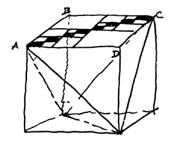

|  |
| Fig. 463.01 There are no straight lines, only waves resembling them. In this diagram, any zigzag path from A to C equals the sum of the sides AB and BC. If zigzag is infinitely small, it looks like a diagonal that should be shorter than ABC. It is not. |